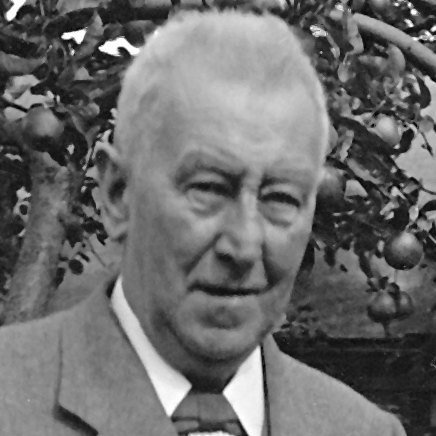
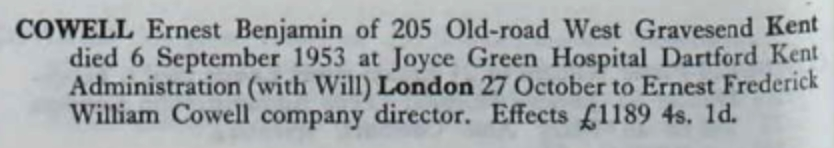
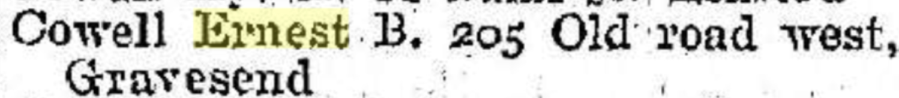
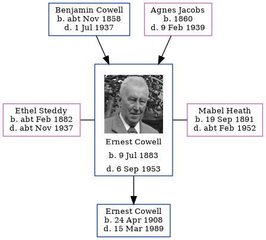

Ernest Benjamin Cowell 1883 - 1953
[ Home ] | [ Calendar ] | [ Surnames Index ] | [ Family History ]A mechanical engineering draughtsman and insurance agent and the son of Benjamin Cowell (a woolen warehouse foreman) and Agnes JacobsErnest Cowell, the third cousin twice-removed on the mother's side of Nigel Horne, was born in Chatham, Kent, England on Jul 9, 18831,2,3,4,5 and was married twice - to Ethel Steddy (in 1907 in Medway, Kent, England) Mabel Heath (c. May 1939 in Strood, Kent, England, following the death of Ethel Maud c. Nov 1937)7. He had 1 child with Ethel Steddy, Ernest Frederick William.
Ernest spent all of his life in Kent, England. Throughout his life, he lived in several places around the county: at 5 Hope Street in Chatham on Apr 5, 189115 and on Mar 31, 190114; at 1 Campbell Road, Gravesend on Apr 2, 19111; and at 205 Old Road West, Gravesend in 193813, on Sep 29, 193916 and in 195312.
He died on Sep 6, 1953 at Joyce Green Hospital, Dartford, Kent3,6 and was buried at Municipal Cemetery, Gravesend, Kent on Sep 11, 19538,9,10,11.
Parents
- Benjamin William was born c. Nov 1858
- Agnes Sarah was born in 1860
Children
- Ernest Frederick William was born on Apr 24, 1908
Citations
- 1911 Census for England & Wales - Findmypast (was age 27 and the head of the household)
- England & Wales births 1837-2006 - Findmypast
- England & Wales deaths 1837-2007 - Findmypast
- Kent Burials - Findmypast
- National Burial Index For England & Wales - Findmypast
- England & Wales Government Probate Death Index 1858-2019 - Findmypast
- England & Wales, FreeBMD Marriage Index: 1837-1915 Online publication - Provo, UT, USA: The Generations Network, Inc., 2006.Original data - General Register Office. England and Wales Civil Registration Indexes. London, England: General Register Office. © Crown copyright. Published by permission of the Cont
- North West Kent Burials Transcription
- Kent Burials - Findmypast
- National Burial Index For England & Wales - Findmypast
- National Burial Index For England & Wales - Findmypast
- From his probate
- 1938 Kelly's Kent Directory
- 1901 England, Wales & Scotland Census - Findmypast (was age 17 and the son of the head of the household)
- 1891 England, Wales & Scotland Census - Findmypast (was age 7 and the son of the head of the household)
- 1939 Register - Findmypast (was the head of the household)
Media
Ernest Benjamin Cowell

Ernest Benjamin Cowell - probate

Kelly's Directory - 1938

1911 Census for England & Wales - GBC/1911/RG14/03831/0641/1
1901 England, Wales & Scotland Census - GBC/1901/0005768563
England & Wales deaths 1837-2007 - BMD/D/1953/3/AZ/000169/043
1891 England, Wales & Scotland Census - GBC/1891/0005444123
England & Wales marriages 1837-2005 - BMD/M/1939/2/AZ/000306/057
1939 Register - TNA/R39/1736/1736E/004/14
North West Kent Burials Transcription - GBPRS-D-28076841
England & Wales marriages 1837-2005 Transcription - BMD-M-1907-2-AZ-000082-107
Kent Burials - GBPRS-D-28076842
England & Wales births 1837-2006 - BMD/B/1883/3/AZ/000121/230
England & Wales Government Probate Death Index 1858-2019 - GBOR/GOVPROBATE/C/1953-1953/00045627
National Burial Index for England & Wales - BMD/NBI/209/00247250
National Burial Index for England & Wales - BMD/NBI/209/00247450
Family Tree
Generated by ged2site. Last updated on Nov 13, 2024